<!doctype html>
<html lang="vi">
<head>
<meta charset="utf-8">
<meta name="viewport" content="width=device-width, initial-scale=1, viewport-fit=cover">
<title>Dòng chảy 9+ — Tri ân thầy Nguyễn Huy Hoàng</title>
<meta name="description" content="Cuốn scrapbook của lớp 12V1 — Dòng chảy 9+ gửi thầy Nguyễn Huy Hoàng nhân ngày Nhà giáo Việt Nam 20/11.">
<meta property="og:title" content="Dòng chảy 9+ — Tri ân thầy Hoàng">
<meta property="og:description" content="Ai đã đặt tên cho dòng chảy? Scrapbook của lớp 12V1 gửi thầy nhân ngày 20/11.">
<meta property="og:image" content="assets/img/anh-510408850.jpg">
<link rel="icon" href="assets/img/con-dau.png">
<link rel="stylesheet" href="https://fonts.googleapis.com/css2?family=Fraunces:ital,opsz,wght,SOFT@0,9..144,400..700,0..100;1,9..144,400..700,0..100&amp;family=Lora:ital,wght@0,400;0,500;1,400&amp;family=Dancing+Script:wght@700&amp;family=Patrick+Hand&amp;display=swap">
<style>
body{margin:0;background:#C9AE82}
.stage{background:#C9AE82 url(assets/img/nen-kraft.jpg) center/900px repeat}
.stage *{box-sizing:border-box}
.book{position:relative;container-type:inline-size;width:min(1240px,calc(100vw - 96px),calc((100vh - 130px) * 1.6));aspect-ratio:1240 / 776;perspective:2400px;--h2:4.3cqw;--b:max(14px,1.32cqw);--k:max(15px,1.6cqw);--cap:max(14px,1.45cqw)}
.board{position:absolute;inset:-12px -12px -16px -12px;background:#7A1C13;border-radius:10px;box-shadow:0 30px 60px rgba(50,25,5,.45),inset 0 0 0 2px rgba(255,220,150,.18);transition:opacity .5s}
.closed .board{opacity:0}
.spread{position:absolute;inset:0;display:flex;animation:spreadIn .35s ease both}
.pg{position:relative;flex:1 1 50%;min-width:0;height:100%;overflow:hidden;padding:3.4cqw 3.6cqw}
.pgL{box-shadow:inset -26px 0 30px -18px rgba(70,40,10,.35);border-radius:4px 0 0 4px}
.pgR{box-shadow:inset 26px 0 30px -18px rgba(70,40,10,.35);border-radius:0 4px 4px 0}
.tex{background-image:url(assets/img/nen-giay.jpg);background-size:700px;background-blend-mode:multiply}
.dk{background-image:radial-gradient(rgba(255,230,170,.1) 1px,transparent 1.6px);background-size:18px 18px}
.pgno{position:absolute;bottom:1.4cqw;font-family:'Patrick Hand',cursive;font-size:var(--cap);opacity:.6}
.pgL .pgno{left:3.6cqw}.pgR .pgno{right:3.6cqw}
.kicker{font-family:'Patrick Hand',cursive;font-size:var(--k);margin:0}
.h2{font-family:'Fraunces',serif;font-weight:600;font-size:var(--h2);line-height:1.02;margin:.6cqw 0 0;letter-spacing:-.01em}
.h2,.chip,[style*="Fraunces"]{font-variation-settings:'SOFT' 100;font-optical-sizing:auto}
.txt{font-size:var(--b);line-height:1.75;margin:1.4cqw 0 0}
.hand{font-family:'Patrick Hand',cursive}
.tape{position:absolute;z-index:4;width:8.4cqw;height:2cqw;min-width:70px;min-height:17px;background-position:center;background-size:100% 100%;background-repeat:no-repeat;filter:drop-shadow(0 2px 2px rgba(0,0,0,.15))}
.tape.top{top:-1cqw;left:50%;translate:-50% 0;rotate:-4deg}
.tape.tl{top:-.2cqw;left:-2.4cqw;rotate:-38deg}
.tape.tr{top:-.2cqw;right:-2.4cqw;rotate:38deg}
.t-pink{background-image:url(assets/img/washi-hong.png)}
.t-mint{background-image:url(assets/img/washi-mint.png)}
.t-sun{background-image:url(assets/img/washi-vang.png)}
.t-ink{background-image:url(assets/img/washi-cham.png)}
.t-red{background-image:url(assets/img/washi-do.png)}
.t-tre{background-image:url(assets/img/washi-tre.png)}
.silk{background:url(assets/img/tam-lua.png) center/96% auto no-repeat}
.pol,.clip{position:relative;margin:0;background:#FFFDF6;padding:.8cqw .8cqw 1cqw;box-shadow:0 8px 18px rgba(60,35,10,.24);transform:rotate(var(--t,0deg));transition:transform .5s cubic-bezier(.3,1.6,.5,1),box-shadow .5s}
.clip{background:#F4EBD8}
.pol:hover,.clip:hover{transform:rotate(0deg) translateY(-8px) scale(1.06);box-shadow:0 22px 38px rgba(60,35,10,.32);z-index:6}
.pol img,.clip img{display:block;width:100%;object-fit:cover}
.clip img{filter:sepia(.18) contrast(1.03)}
.pol figcaption,.clip figcaption{font-family:'Patrick Hand',cursive;font-size:var(--cap);line-height:1.25;text-align:center;margin-top:.6cqw;color:#3B2A12}
.sticky{background:#FBE7A1;padding:1.2cqw 1.4cqw;box-shadow:0 8px 16px rgba(60,35,10,.2);transform:rotate(var(--t,0deg));transition:transform .45s cubic-bezier(.3,1.6,.5,1)}
.sticky:hover{transform:rotate(0deg) scale(1.06)}
.deco{position:absolute;z-index:3}
.stk{display:block;width:100%;height:auto;filter:drop-shadow(0 6px 8px rgba(60,35,10,.28));transition:transform .4s cubic-bezier(.3,1.6,.5,1)}
.stk:hover{transform:scale(1.1) rotate(-4deg)}
.wig:hover{animation:wig .6s ease-in-out}
.bob{animation:bob 4.5s ease-in-out infinite}
.swing{transform-origin:50% 0;animation:swing 5s ease-in-out infinite}
.spin{animation:spin 2.4s linear infinite}
.reel:hover{animation:spin 2.4s linear infinite}
.chip{display:inline-flex;align-items:center;justify-content:center;min-width:.8em;padding:0 .12em;margin:0 .04em;transform:rotate(var(--t,0deg));transition:transform .35s cubic-bezier(.3,1.8,.5,1)}
.chip:hover{transform:rotate(0deg) translateY(-8px) scale(1.12)}
.a{animation:pop .8s cubic-bezier(.3,1.5,.5,1) both;animation-delay:calc(var(--d,0s) + .45s)}
.a.up{animation-name:up}.a.fromL{animation-name:fromL}.a.fromR{animation-name:fromR}.a.drop{animation-name:drop}.a.stamp{animation-name:stampin}
.a.stand{animation-name:stand;transform-origin:50% 100%}
.persp{perspective:900px}
.flip{position:relative;display:block;width:100%;height:100%;padding:0;border:none;background:none;cursor:pointer;perspective:1000px;font:inherit;color:inherit;text-align:center}
.flip .inner{position:absolute;inset:0;transition:transform .8s cubic-bezier(.3,1.3,.5,1);transform-style:preserve-3d}
.flip:hover .inner,.flip:focus-visible .inner{transform:rotateY(180deg)}
.face{position:absolute;inset:0;backface-visibility:hidden;-webkit-backface-visibility:hidden;display:flex;flex-direction:column;align-items:center;justify-content:center;gap:.8cqw;padding:1.4cqw}
.face.back{transform:rotateY(180deg)}
.env{position:relative;display:block;width:100%;aspect-ratio:3 / 2;padding:0;border:none;background:none;cursor:pointer;font:inherit;color:inherit;perspective:700px}
.env .body{position:absolute;inset:0;background:#E3C690;box-shadow:0 8px 16px rgba(70,40,10,.2)}
.env .letter{position:absolute;left:9%;right:9%;top:12%;height:70%;background:#FFFDF6;z-index:1;transition:transform .55s cubic-bezier(.3,1.5,.5,1);padding:8px;font-family:'Patrick Hand',cursive;font-size:max(12px,1cqw);color:#6B5229;text-align:left}
.env .pocket{position:absolute;inset:0;z-index:2;background:#EBD3A3;clip-path:polygon(0 30%,50% 66%,100% 30%,100% 100%,0 100%)}
.env .flap{position:absolute;left:0;right:0;top:0;height:62%;z-index:3;background:#D9B675;clip-path:polygon(0 0,100% 0,50% 100%);transform-origin:50% 0;transition:transform .5s ease,z-index 0s .25s}
.env:hover .flap,.env:focus-visible .flap{transform:rotateX(180deg);z-index:0}
.env:hover .letter,.env:focus-visible .letter{transform:translateY(-40%)}
.env .seal{position:absolute;left:50%;top:52%;z-index:4;width:2.8cqw;height:2.8cqw;min-width:28px;min-height:28px;translate:-50% -50%;border-radius:50%;background:#C8361D;color:#F8E9C8;display:flex;align-items:center;justify-content:center;font-family:'Dancing Script',cursive;font-size:max(13px,1.1cqw);transition:opacity .3s}
.env:hover .seal{opacity:0}
.env .who{position:absolute;left:4px;right:4px;bottom:6%;z-index:4;font-family:'Patrick Hand',cursive;font-size:max(12px,1.05cqw);line-height:1.1;color:#3B2A12;text-align:center}
.stele{transition:transform .45s cubic-bezier(.3,1.6,.5,1),box-shadow .45s}
.stele:hover{transform:translateY(-8px);box-shadow:0 0 0 2px #E3B556,0 14px 24px rgba(227,181,86,.35)}
.lamp{transition:filter .4s}.lamp:hover{filter:brightness(1.3) drop-shadow(0 0 30px rgba(255,190,80,.95))}
.leaf{position:absolute;top:0;bottom:0;width:50%;z-index:40;transform-style:preserve-3d;pointer-events:none}
.leaf.next{left:50%;transform-origin:0 50%;animation:turnNext .95s cubic-bezier(.45,.05,.3,1) both}
.leaf.prev{left:0;transform-origin:100% 50%;animation:turnPrev .95s cubic-bezier(.45,.05,.3,1) both}
.leaf .lf,.leaf .lb{position:absolute;inset:0;backface-visibility:hidden;-webkit-backface-visibility:hidden}
.leaf .lb{transform:rotateY(180deg)}
.leaf .lf::after,.leaf .lb::after{content:'';position:absolute;inset:0;pointer-events:none;animation:shade .95s ease-in-out both}
.leaf.next .lf,.leaf.prev .lb{border-radius:0 4px 4px 0;box-shadow:inset 26px 0 30px -18px rgba(70,40,10,.35),0 0 30px rgba(60,30,5,.3)}
.leaf.prev .lf,.leaf.next .lb{border-radius:4px 0 0 4px;box-shadow:inset -26px 0 30px -18px rgba(70,40,10,.35),0 0 30px rgba(60,30,5,.3)}
.clipL{clip-path:inset(0 50% 0 0)}
.clipR{clip-path:inset(0 0 0 50%)}
.old{animation:none}
.navbtn{display:inline-flex;align-items:center;justify-content:center;gap:8px;min-width:48px;min-height:48px;padding:0 18px;border:none;border-radius:999px;background:#FFF7E6;color:#3B2A12;font-family:'Patrick Hand',cursive;font-size:19px;cursor:pointer;box-shadow:0 6px 14px rgba(60,35,10,.25);transition:transform .25s}
.navbtn:hover{transform:translateY(-3px)}
.navbtn:disabled{opacity:.35;cursor:default;transform:none}
.tabs{position:absolute;right:-48px;top:4%;z-index:1;display:flex;flex-direction:column;gap:6px}
.tab{width:52px;height:38px;padding:0 0 0 18px;border:none;border-radius:0 8px 8px 0;font-family:'Fraunces',serif;font-weight:600;font-size:15px;color:#FFF7E6;cursor:pointer;text-align:left;box-shadow:2px 3px 6px rgba(60,35,10,.25);transition:transform .25s}
.tab:hover,.tab.on{transform:translateX(8px)}
.corner{position:absolute;bottom:0;z-index:20;width:64px;height:64px;border:none;padding:0;cursor:pointer;background:transparent}
.corner span{position:absolute;inset:auto 0 0 auto;width:34px;height:34px;transition:width .3s,height .3s}
.corner.r{right:0}.corner.r span{background:linear-gradient(135deg,transparent 50%,#E6D6B4 50%);box-shadow:-3px -3px 6px rgba(60,35,10,.18);border-radius:0 0 4px 0}
.corner.l{left:0}.corner.l span{inset:auto auto 0 0;background:linear-gradient(225deg,transparent 50%,#E6D6B4 50%);box-shadow:3px -3px 6px rgba(60,35,10,.18);border-radius:0 0 0 4px}
.corner:hover span{width:56px;height:56px}
@media (max-width:820px){
.book{width:calc(100vw - 24px);aspect-ratio:auto;height:calc(100vh - 128px);--h2:36px;--b:16px;--k:18px;--cap:16px}
.spread{flex-direction:column;overflow-y:auto}
.pg{flex:none;height:auto;min-height:100%;overflow:visible;padding:28px 22px 48px}
.pgL,.pgR{border-radius:4px}
.tabs,.leaf,.corner,.hide-m,.old{display:none}
.clipL,.clipR{clip-path:none}
.mstack{flex-direction:column !important}
}
@keyframes spreadIn{from{opacity:0}to{opacity:1}}
@keyframes shade{0%{background:rgba(40,20,0,0)}50%{background:rgba(40,20,0,.18)}100%{background:rgba(40,20,0,0)}}
@keyframes turnNext{0%{transform:rotateY(0)}100%{transform:rotateY(-180deg)}}
@keyframes turnPrev{0%{transform:rotateY(0)}100%{transform:rotateY(180deg)}}
@keyframes pop{0%{opacity:0;scale:.45;rotate:-12deg}70%{opacity:1;scale:1.07;rotate:3deg}100%{opacity:1;scale:1;rotate:0deg}}
@keyframes up{from{opacity:0;translate:0 50px}to{opacity:1;translate:0 0}}
@keyframes fromL{0%{opacity:0;translate:-120px 0;rotate:-10deg}75%{opacity:1;translate:8px 0;rotate:2deg}100%{opacity:1;translate:0 0;rotate:0deg}}
@keyframes fromR{0%{opacity:0;translate:120px 0;rotate:10deg}75%{opacity:1;translate:-8px 0;rotate:-2deg}100%{opacity:1;translate:0 0;rotate:0deg}}
@keyframes drop{0%{opacity:0;translate:0 -100px;rotate:-14deg}70%{opacity:1;translate:0 8px;rotate:3deg}100%{opacity:1;translate:0 0;rotate:0deg}}
@keyframes stand{0%{opacity:0;rotate:x 88deg}70%{opacity:1;rotate:x -10deg}100%{opacity:1;rotate:x 0deg}}
@keyframes stampin{0%{opacity:0;scale:2.8;rotate:-30deg}60%{opacity:1;scale:.9;rotate:-6deg}100%{opacity:1;scale:1;rotate:-8deg}}
@keyframes wig{0%,100%{rotate:0deg}20%{rotate:-9deg}40%{rotate:7deg}60%{rotate:-5deg}80%{rotate:3deg}}
@keyframes bob{0%,100%{translate:0 0}50%{translate:0 -10px}}
@keyframes swing{0%,100%{rotate:-5deg}50%{rotate:5deg}}
@keyframes spin{to{rotate:360deg}}

/* Bản chia trang: một tờ giấy mỗi màn hình, trượt trái/phải */
.board,.leaf,.tabs,.corner{display:none !important}
.book{perspective:none}
.spread{filter:drop-shadow(0 22px 30px rgba(70,45,15,.35));clip-path:polygon(0% 12px,4% 3px,9% 11px,14% 2px,19% 9px,25% 3px,31% 11px,37% 4px,43% 12px,49% 2px,55% 10px,61% 3px,67% 11px,73% 3px,79% 9px,85% 2px,91% 11px,96% 4px,100% 10px,100% calc(100% - 11px),96% calc(100% - 3px),90% calc(100% - 10px),84% calc(100% - 2px),78% calc(100% - 11px),72% calc(100% - 3px),66% calc(100% - 12px),60% calc(100% - 3px),54% calc(100% - 9px),48% calc(100% - 2px),42% calc(100% - 11px),36% calc(100% - 4px),30% calc(100% - 10px),24% calc(100% - 2px),18% calc(100% - 11px),12% calc(100% - 3px),6% calc(100% - 9px),0% calc(100% - 4px))}
.pgL,.pgR{box-shadow:none;border-radius:0}
.pgR::before{content:'';position:absolute;left:0;top:6%;bottom:6%;border-left:2px dashed rgba(120,90,50,.18)}
.spread.clipL,.spread.clipR{clip-path:polygon(0% 12px,4% 3px,9% 11px,14% 2px,19% 9px,25% 3px,31% 11px,37% 4px,43% 12px,49% 2px,55% 10px,61% 3px,67% 11px,73% 3px,79% 9px,85% 2px,91% 11px,96% 4px,100% 10px,100% calc(100% - 11px),96% calc(100% - 3px),90% calc(100% - 10px),84% calc(100% - 2px),78% calc(100% - 11px),72% calc(100% - 3px),66% calc(100% - 12px),60% calc(100% - 3px),54% calc(100% - 9px),48% calc(100% - 2px),42% calc(100% - 11px),36% calc(100% - 4px),30% calc(100% - 10px),24% calc(100% - 2px),18% calc(100% - 11px),12% calc(100% - 3px),6% calc(100% - 9px),0% calc(100% - 4px))}
.spread.clipR{animation:inR .6s cubic-bezier(.2,.8,.2,1) both}
.spread.clipL{animation:inL .6s cubic-bezier(.2,.8,.2,1) both}
.spread.old.clipL{animation:outL .5s ease-in both}
.spread.old.clipR{animation:outR .5s ease-in both}
@keyframes inR{from{opacity:0;translate:90px 0;rotate:2deg}to{opacity:1;translate:0 0;rotate:0deg}}
@keyframes inL{from{opacity:0;translate:-90px 0;rotate:-2deg}to{opacity:1;translate:0 0;rotate:0deg}}
@keyframes outL{to{opacity:0;translate:-120px 0;rotate:-3deg}}
@keyframes outR{to{opacity:0;translate:120px 0;rotate:3deg}}
.cover1{flex:1 1 100% !important}

.book{width:min(calc(100vw - 20px),calc((100vh - 20px) * 1.6)) !important}
.stage{gap:0 !important;padding:10px !important}
.stage>nav{position:fixed;inset:0;z-index:60;pointer-events:none;display:flex;align-items:center;justify-content:space-between;padding:0 18px}
.stage>nav>button{pointer-events:auto;width:64px;height:64px;padding:0;background:rgba(255,247,230,.92);box-shadow:0 8px 20px rgba(60,35,10,.35)}
.stage>nav>button svg{width:26px;height:26px}
.stage>nav>button:disabled{opacity:0;pointer-events:none}
.stage>nav>span{position:absolute;left:50%;bottom:18px;translate:-50% 0;pointer-events:auto;min-width:0 !important;font-size:17px !important;box-shadow:0 6px 14px rgba(60,35,10,.2)}
@media (max-width:820px){.stage>nav{position:static;padding:10px 0 0;justify-content:center;gap:12px}.stage>nav>span{position:static;translate:none}.book{height:calc(100vh - 96px) !important}.spread{clip-path:none}.pgR::before{display:none}}

/* Điện thoại: mỗi lần mở là một cột dọc, nội dung đủ to để đọc */
@media (max-width:820px){
.pg{min-height:0 !important;padding:30px 20px 40px !important}
.spread{background:#F6EDDA}
.collage{min-height:122vw}
.collage .deco{transform:scale(1.6);transform-origin:center}
.sticky{background-image:none !important}
.sticky p{line-height:1.75 !important}
.spread [style*="repeat(4, minmax(0, 1fr))"],.spread [style*="repeat(3, minmax(0, 1fr))"]{grid-template-columns:repeat(2,minmax(0,1fr)) !important;gap:18px !important}
.spread [style*="gap: 1.8cqw"]{grid-template-columns:1fr !important;gap:18px !important}
.mstack[style*="grid"]{grid-template-columns:1fr !important;gap:16px !important}
.mstack>*{flex:none !important;width:100% !important}
.spread [style*="flex: 0 0 34%"],.spread [style*="flex: 0 0 38%"],.spread [style*="flex: 0 0 22%"]{flex:0 0 42% !important}
.spread [style*="gap: 2cqw"],.spread [style*="gap: 1.6cqw"],.spread [style*="gap: 2.4cqw"]{gap:18px !important}
.pol,.clip{padding:8px 8px 10px}
.tape{width:84px;height:20px}
.txt{margin-top:14px}
.h2{margin-top:6px}
.stage>nav>button{width:52px;height:52px}
}

.pg{overflow-y:auto !important;scrollbar-width:thin;scrollbar-color:rgba(120,90,50,.35) transparent}
.musicBtn{position:fixed;top:16px;right:16px;z-index:70;display:inline-flex;align-items:center;gap:8px;min-height:44px;padding:0 16px;border:none;border-radius:999px;background:rgba(255,247,230,.94);color:#3B2A12;font-family:'Patrick Hand',cursive;font-size:17px;cursor:pointer;box-shadow:0 6px 16px rgba(60,35,10,.28)}
.musicBtn .spin{animation:spin 3s linear infinite}
@media (prefers-reduced-motion: reduce){.a,.bob,.swing,.spin,.wig:hover,.leaf,.spread{animation:none}}
</style>
<script src="https://cdn.jsdelivr.net/npm/preact@10.19.3/dist/preact.umd.js"></script>
<script src="https://cdn.jsdelivr.net/npm/htm@3.1.1/dist/htm.umd.js"></script>
</head>
<body>
<div id="app"></div>
<script>
const { h, render } = preact;
const html = htm.bind(h);
class DCLogic { constructor(props) { this.props = props || {}; this.state = {}; } setState(p) { Object.assign(this.state, typeof p === 'function' ? p(this.state) : p); schedule(); } forceUpdate() { schedule(); } }

class Component extends DCLogic {
  constructor(props) { super(props); this.state = { page: 0, prevPage: 0, dir: 'next', flipping: false, open: -1, playing: true }; this.tx = null; this.pausedByVideo = false; }
  // Nhạc mặc định bật: thử phát ngay; nếu trình duyệt chặn thì phát ở lần chạm/bấm đầu tiên
  componentDidMount() {
    const evs = ['pointerdown', 'touchstart'];
    this.removeUnlock = () => evs.forEach((ev) => document.removeEventListener(ev, this.unlock, true));
    this.unlock = (e) => {
      this.removeUnlock();
      if (this.started) return;
      this.started = true;
      if (e.target && e.target.closest && e.target.closest('.musicBtn')) return;
      if (this.state.playing) this.music(true);
    };
    evs.forEach((ev) => document.addEventListener(ev, this.unlock, true));
    const a = document.getElementById('bgm');
    const r = a ? a.play() : null;
    if (r && r.then) r.then(() => { this.started = true; this.removeUnlock(); }).catch(() => {});
  }
  componentWillUnmount() { clearTimeout(this.timer); if (this.removeUnlock) this.removeUnlock(); }
  go(target) {
    const total = 12;
    this.page0Start(target);
    if (this.state.page === 6 && target !== 6 && this.pausedByVideo) { this.pausedByVideo = false; this.music(true); }
    if (this.state.flipping || target < 0 || target >= total || target === this.state.page) return;
    const dir = target > this.state.page ? 'next' : 'prev';
    this.setState({ page: target, prevPage: this.state.page, dir, flipping: true, open: -1 });
    clearTimeout(this.timer);
    this.timer = setTimeout(() => this.setState({ flipping: false }), 600);
  }
  page0Start(target) {
    if (this.state.page === 0 && target > 0 && !this.started) { this.started = true; this.music(true); }
  }
  music(on) {
    const a = document.getElementById('bgm');
    if (a) { if (on) { const r = a.play(); if (r && r.catch) r.catch(() => this.setState({ playing: false })); } else a.pause(); }
    this.setState({ playing: on });
  }
  renderVals() {
    const { page, dir } = this.state;
    const total = 12;
    const chapters = [
      { label: '✦', name: 'Lời mở đầu', work: '', bg: '#C8361D', page: 1 },
      { label: 'I', name: 'Cảnh cho chữ', work: 'Chữ người tử tù', bg: '#7A1C13', page: 2 },
      { label: 'II', name: 'Ngọn đèn', work: 'Hai đứa trẻ', bg: '#2C4A7E', page: 3 },
      { label: 'III', name: 'Dữ dội và dịu êm', work: 'Sóng', bg: '#1F6F6B', page: 4 },
      { label: 'IV', name: 'Đoàn quân áo dài', work: 'Tây Tiến', bg: '#4E7A5A', page: 5 },
      { label: '◇', name: 'Thước phim Văn Miếu', work: 'Ngày 21 tháng 6', bg: '#2A1512', page: 6 },
      { label: 'V', name: 'Lớp Văn thầy Hoàng', work: 'Đàn ghi ta của Lorca', bg: '#B0301F', page: 7 },
      { label: 'VI', name: 'Bảng vàng', work: 'Bia Tiến sĩ', bg: '#5E5A50', page: 8 },
      { label: 'VII', name: 'Thư gửi thầy', work: 'Những phong thư', bg: '#B5852F', page: 9 },
      { label: 'Kết', name: 'Thuyền ra khơi', work: 'Tràng giang', bg: '#D9773A', page: 10 }
    ];
    const tabs = chapters.map((c) => ({ ...c, label: c.label === '✦' ? '·' : c.label, on: page === c.page ? 'on' : '', go: () => this.go(c.page) }));
    const toc = chapters.map((c, i) => ({ ...c, d: (0.15 + i * 0.07).toFixed(2), go: () => this.go(c.page) }));
    const names = ['Bìa', 'Lời mở đầu', 'Chương I · Cảnh cho chữ', 'Chương II · Ngọn đèn', 'Chương III · Sóng', 'Chương IV · Tây Tiến', 'Thước phim Văn Miếu', 'Chương V · Khúc hát', 'Chương VI · Bảng vàng', 'Chương VII · Thư gửi thầy', 'Kết · Tràng giang', 'Phụ lục'];
    const chipColors = [['#C8361D', '#FBE6BE'], ['#1F6F6B', '#F3E9D2'], ['#F2D27C', '#2A231C'], ['#2C4A7E', '#F3E9D2'], ['#FFFDF6', '#2A231C'], ['#EFA7A0', '#2A231C']];
    const tilts = [-6, 4, -3, 7, -5, 3, -7, 5, -2];
    let ci = 0;
    const titleWords = ['DÒNG', 'CHẢY'].map((w) => ({
      chips: w.split('').map((ch) => {
        const i = ci++;
        const [bg, fg] = chipColors[i % chipColors.length];
        return { ch, bg, fg, t: tilts[i], d: (0.2 + i * 0.07).toFixed(2) };
      })
    }));
    const words = [
      { word: 'Tử tế', quote: '“Học văn là học tập sự tử tế.”', label: 'Tấm lụa Tử tế: Học văn là học tập sự tử tế', d: '0.5' },
      { word: 'Nỗ lực', quote: '“May mắn là tên gọi khác của sự nỗ lực.”', label: 'Tấm lụa Nỗ lực: May mắn là tên gọi khác của sự nỗ lực', d: '0.65' },
      { word: '9+', quote: '“Con phải được 9+ Văn.”', label: 'Tấm lụa 9+: Con phải được 9+ Văn', d: '0.8' }
    ];
    const waves = [
      { n: 'I', img: 'assets/img/anh-481040743.jpg', title: 'Lớp “Học Văn”', text: 'Bó hoa đầu tiên tặng thầy.', anim: 'fromL', t: -3, tape: 't-pink', d: '0.5' },
      { n: 'II', img: 'assets/img/anh-496925270.jpg', title: 'Chốt hạ 9+', text: 'Lời hứa với thầy, và với mình.', anim: 'drop', t: 2, tape: 't-mint', d: '0.65' },
      { n: 'III', img: 'assets/img/anh-511014307.jpg', title: 'Lễ dâng hương', text: '21/6/2025, trước giờ vào trận.', anim: 'drop', t: -2, tape: 't-sun', d: '0.3' },
      { n: 'IV', img: 'assets/img/anh-520252585.jpg', title: 'Ngữ văn: 9.75', text: 'Ngày tra điểm, tin nhắn dồn dập.', anim: 'fromR', t: 3, tape: 't-red', d: '0.45' }
    ];
    const photos = [
      { src: 'assets/img/anh-526592770.jpg', cap: 'Vị thuyền trưởng', t: -3, anim: 'drop', tape: 't-red' },
      { src: 'assets/img/anh-511132809.jpg', cap: 'Lớp Văn thầy Hoàng', t: 2, anim: 'pop', tape: 't-mint' },
      { src: 'assets/img/anh-z6730050035150.jpg', cap: 'Dưới cột son', t: -1, anim: 'drop', tape: 't-sun' },
      { src: 'assets/img/anh-530544244.jpg', cap: 'Cả lớp cùng thầy', t: 3, anim: 'pop', tape: 't-tre' },
      { src: 'assets/img/anh-480511005.jpg', cap: '20/11 năm ấy', t: -2, anim: 'drop', tape: 't-pink' },
      { src: 'assets/img/anh-536291108.jpg', cap: 'Selfie cùng thầy', t: 2, anim: 'pop', tape: 't-ink' }
    ].map((p, i) => ({ ...p, d: (0.2 + i * 0.12).toFixed(2) }));
    const lyrics = [
      { tag: 'Verse 1', text: 'Văn chương là chiếc cầu dịu dàng\nBắc qua những khát vọng mênh mang\nLà Nguyễn Du khóc cho thân phận\nLà nhân văn giữa thế gian lạnh căm', anim: 'fromL', t: -2 },
      { tag: 'Chorus', text: 'Lớp Văn thầy Hoàng, nơi bắt đầu\nNơi gieo hạt nhân văn trong từng câu\nHạnh phúc là khi em thấu hiểu\nMột trang văn – cả cuộc đời yêu', anim: 'pop', t: 2 },
      { tag: 'Bridge', text: 'Có những mùa em chưa kịp đặt tên\nNhưng thầy đến – như vầng trăng dịu êm\nChiếu qua bóng tối trong lòng lặng lẽ\nGieo nhân từ – trên từng nét mực mềm', anim: 'fromR', t: -1 },
      { tag: 'Outro', text: 'Rồi mai sau, qua vạn nẻo đường xa\nEm mang theo lớp Văn như món quà\nMột niềm tin – viết đời bằng nhân ái\nGiữa nhân gian, vẫn thắp sáng thơ ca', anim: 'pop', t: 3 }
    ].map((l, i) => ({ ...l, d: (0.2 + i * 0.15).toFixed(2) }));
    const honors = [
      ['Chử Mỹ Dung', '9.25'], ['Nguyễn Kim Ngọc', '9.25'], ['Khúc Thành Công', '9.25'],
      ['Ngô Trung Đức', '9'], ['Lê Hải Hoàng', '9'], ['Dương Quang Anh', '9'],
      ['Nguyễn Khánh Chi', '9'], ['Trần Quang Anh', '9'],
      ['Phạm Quang Minh', '8.5'], ['Nguyễn Duy Bảo', '8.25']
    ].map(([name, score], i) => ({ name, score, d: (0.15 + i * 0.08).toFixed(2) }));
    const fun = [
      { src: 'assets/img/anh-510859335.gif', cap: 'Mắt không thấy, tim không đau', t: -3, tape: 't-pink' },
      { src: 'assets/img/anh-poster-thay.jpg', cap: 'Thầy Hoàng dạy hay, 9+ trong tay', t: 2, tape: 't-mint' },
      { src: 'assets/img/anh-615548031.jpg', cap: 'Giảng Văn dưới đáy đại dương', t: -2, tape: 't-sun' },
      { src: 'assets/img/anh-590691534.jpg', cap: 'Món quà khung ảnh', t: 3, tape: 't-red' }
    ].map((f, i) => ({ ...f, d: (0.25 + i * 0.15).toFixed(2) }));
    const raw = [
      { name: 'Đứa ngồi bàn đầu', text: 'Con vẫn nhớ buổi đầu tiên vào lớp, thầy viết lên bảng: “Học văn là học tập sự tử tế.” Lúc đó con nghĩ chắc thầy nói cho hay thôi. Một năm sau con mới hiểu: thầy dạy chúng con đọc một trang văn, nhưng thật ra là dạy cách nhìn một con người.\nCon cảm ơn thầy vì đã kiên nhẫn với cả những câu hỏi ngớ ngẩn nhất của con.' },
      { name: 'Đứa hay nộp bài muộn', text: 'Thầy ơi, con xin lỗi vì bao nhiêu lần nộp bài lúc 23h59 (và cả 0h03). Thầy chưa bao giờ mắng, chỉ nhắn một câu: “Con làm được mà.” Câu đó con nhớ hơn mọi lời phê đỏ.\nMay mắn là tên gọi khác của sự nỗ lực — và con đã nỗ lực, thật đấy ạ.' },
      { name: 'Đứa từng sợ môn Văn', text: 'Trước khi học thầy, con sợ Văn lắm. Con nghĩ mình không có “năng khiếu”. Thầy bảo không cần năng khiếu, chỉ cần chịu đọc, chịu nghĩ, chịu viết lại lần thứ năm.\nGiờ con không còn sợ nữa. Con còn thấy thương Văn. Con cảm ơn thầy nhiều lắm.' },
      { name: 'Đứa đi xe về muộn nhất', text: 'Những tối học xong, cả bọn đi xe về qua mấy con phố vắng, vừa đi vừa cãi nhau về đề Nghị luận. Thầy biết không, chính những buổi tối ấy là phần con nhớ nhất của năm 12.\nCảm ơn thầy đã là ngọn đèn của những tối ôn thi.' },
      { name: 'Một trong 228 người', text: 'Có hôm lớp online đông tới 228 người, 10 giờ đêm mà thầy vẫn giảng hăng như buổi sáng. Con ngồi sau màn hình, tắt cam, nhưng con nghe hết từng chữ.\nCon chỉ muốn nói: con đã ở đó, và con biết ơn thầy.' },
      { name: 'Đứa giữ cuốn Chốt hạ 9+', text: 'Cuốn Chốt hạ 9+ của con giờ nhàu nát, đầy highlight và cả vết trà sữa. Con không nỡ bỏ. Nó là bằng chứng một năm con đã cố gắng thế nào, và thầy đã đồng hành cùng con thế nào.\nCon hứa sẽ giữ nó thật lâu.' },
      { name: 'Đứa áo dài hồng ở Văn Miếu', text: 'Hôm Lễ dâng hương ở Văn Miếu, thầy mặc áo dài đỏ đứng giữa cả trăm đứa học trò, cười tươi như Tết. Lúc ấy con thấy mình không chỉ đi thi một mình.\nCảm ơn thầy đã đưa chúng con về nơi “tôn sư trọng đạo” trước giờ vào trận.' },
      { name: 'Cả lớp 12V1', text: 'Thầy bảo: “Con phải được 9+ Văn.” Chúng con đã cố hết sức để giữ lời hứa ấy. Nhưng điều chúng con mang theo lâu nhất không phải con điểm, mà là thầy — người đã đặt tên cho dòng chảy của chúng con.\nChúc thầy 20/11 thật hạnh phúc. Chúng con thương thầy!' }
    ];
    const anims = ['pop', 'drop', 'fromR', 'pop'];
    const letters = raw.map((l, i) => ({ ...l, anim: anims[i % 4], d: (0.2 + i * 0.09).toFixed(2), open: () => this.setState({ open: i }) }));
    const cur = raw[this.state.open];
    // Màu nền trái / phải của từng lần mở sách, để trang đang lật mang đúng màu trang cũ và trang mới
    const cream = { c: '#F6EDDA', t: 'tex' };
    const sides = [
      [cream, cream],
      [cream, cream],
      [{ c: '#3A1310', t: 'dk' }, { c: '#3A1310', t: 'dk' }],
      [{ c: '#1B2747', t: 'dk' }, { c: '#1B2747', t: 'dk' }],
      [{ c: '#DCEDE8', t: 'tex' }, { c: '#DCEDE8', t: 'tex' }],
      [{ c: '#E4E8D6', t: 'tex' }, { c: '#E4E8D6', t: 'tex' }],
      [{ c: '#2A1512', t: 'dk' }, { c: '#2A1512', t: 'dk' }],
      [{ c: '#8E1F17', t: 'dk' }, { c: '#8E1F17', t: 'dk' }],
      [{ c: '#3D403C', t: 'dk' }, { c: '#3D403C', t: 'dk' }],
      [{ c: '#F1DFB6', t: 'tex' }, { c: '#F1DFB6', t: 'tex' }],
      [{ c: '#F6C987', t: 'tex' }, { c: '#F6C987', t: 'tex' }],
      [cream, { c: '#8E1F17', t: '' }]
    ];
    const flipping = this.state.flipping;
    const prevPage = this.state.prevPage ?? 0;
    const front = dir === 'next' ? sides[prevPage][1] : sides[prevPage][0];
    const back = dir === 'next' ? sides[page][0] : sides[page][1];
    const flags = {};
    for (let i = 0; i < total; i++) {
      flags['s' + i] = page === i || (flipping && prevPage === i);
      let k = '';
      if (flipping && i === page) k = dir === 'next' ? 'clipR' : 'clipL';
      else if (flipping && i === prevPage) k = 'old ' + (dir === 'next' ? 'clipL' : 'clipR');
      flags['k' + i] = k;
    }
    return {
      ...flags,
      titleWords, words, wavesL: waves.slice(0, 2), wavesR: waves.slice(2), photos, lyrics, honors, fun, letters, tabs, toc,
      bookCls: '',
      showTabs: page > 0,
      flipping,
      leafCls: dir,
      leafFront: front.c, leafFrontCls: front.t,
      leafBack: back.c, leafBackCls: back.t,
      canPrevCorner: page > 1,
      canNextCorner: page > 0 && page < total - 1,
      atStart: page === 0,
      atEnd: page === total - 1,
      label: names[page] + ' · ' + (page + 1) + '/' + total,
      next: () => this.go(page + 1),
      prev: () => this.go(page - 1),
      restart: () => this.go(0),
      touchStart: (e) => { const t = e.touches && e.touches[0]; this.tx = t ? t.clientX : null; },
      touchEnd: (e) => {
        const t = e.changedTouches && e.changedTouches[0];
        if (this.tx == null || !t || this.state.open >= 0) return;
        const dx = t.clientX - this.tx; this.tx = null;
        if (dx < -50) this.go(page + 1); else if (dx > 50) this.go(page - 1);
      },
      hasOpen: this.state.open >= 0,
      openName: cur ? cur.name : '',
      openText: cur ? cur.text : '',
      close: () => this.setState({ open: -1 }),
      spinCls: this.state.playing ? 'spin' : '',
      playLabel: this.state.playing ? 'Đang phát… (bấm để dừng)' : 'Bật băng nghe bài hát',
      musicLabel: this.state.playing ? 'Nhạc: bật' : 'Nhạc: tắt',
      musicAria: this.state.playing ? 'Tắt nhạc nền' : 'Bật nhạc nền',
      noteCls: this.state.playing ? 'spin' : '',
      videoPlay: () => { const a = document.getElementById('bgm'); if (a && !a.paused) { this.pausedByVideo = true; this.music(false); } },
      togglePlay: () => { const a = document.getElementById('bgm'); this.pausedByVideo = false; this.started = true; this.music(a ? a.paused : !this.state.playing); }
    };
  }
}

function view(v) { with (v) { return html`<main class="stage" style="min-height: 100vh; display: flex; flex-direction: column; align-items: center; justify-content: center; gap: 22px; padding: 20px 12px; font-family: 'Lora', serif; color: #2A231C; overflow: hidden">

<div class="bookwrap" onTouchStart=${touchStart} onTouchEnd=${touchEnd}>
<div class="book ${bookCls}">
<div class="board"></div>

${(showTabs) ? html`<div class="tabs" aria-label="Mục lục nhanh">
${(tabs || []).map((t, $index) => html`<button type="button" class="tab ${t.on}" style="background: ${t.bg}" onClick=${t.go} aria-label="Mở ${t.name}">${t.label}</button>`)}
</div>` : null}

${(s0) ? html`<div class="spread ${k0}">
<div class="pg pgL tex" style="background-color: #F6EDDA; display: flex; flex-direction: column">
<p class="a up hand" style="--d: 0s; margin: 0; font-size: var(--cap); color: #7A5B2E">Tập scrapbook · Lớp 12V1</p>
<p class="a up hand" style="--d: .1s; margin: 2.2cqw 0 0; font-size: var(--k); color: #C8361D">Kính tặng thầy Nguyễn Huy Hoàng</p>
<p class="a up" style="--d: .2s; margin: .4cqw 0 0; font-family: 'Fraunces', serif; font-style: italic; font-size: max(26px, 3.6cqw); line-height: 1.05">Ai đã đặt tên cho</p>
<h1 style="margin: .8cqw 0 0; font-family: 'Fraunces', serif; font-weight: 600; font-size: max(40px, min(5.6cqw, 12vw)); line-height: 1.2; display: flex; flex-wrap: wrap; gap: .1em .45em">
${(titleWords || []).map((tw, $index) => html`<span style="display: inline-flex; flex-wrap: nowrap; white-space: nowrap">
${(tw.chips || []).map((c, $index) => html`<span class="chip a" style="--d: ${c.d}s; --t: ${c.t}deg; background: ${c.bg}; color: ${c.fg}">${c.ch}</span>`)}
</span>`)}
</h1>
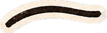
<p class="txt a up" style="--d: 1s; max-width: 92%">Một năm học Văn, mười mấy trang đời. Cuốn scrapbook nhỏ của lớp 12V1 — Dòng chảy 9+, dán đầy ảnh, chữ và những điều chúng con chưa kịp nói.</p>
<div style="margin-top: auto; display: flex; align-items: flex-end; justify-content: space-between; gap: 2cqw">
<div class="a fromL" style="--d: 1.1s; width: 52%">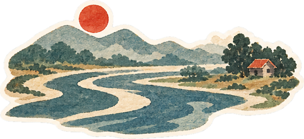</div>
<button type="button" class="navbtn a up" onClick=${next} style="--d: 1.3s; background: #C8361D; color: #FBE6BE">Bắt đầu xem
<svg width="18" height="18" viewBox="0 0 24 24" fill="none" stroke="currentColor" stroke-width="2" stroke-linecap="round" aria-hidden="true"><path d="M5 12h14M13 6l6 6-6 6"></path></svg></button>
</div>
</div>
<div class="pg pgR tex collage" style="background-color: #F6EDDA">
<p class="a up hand" style="--d: .1s; margin: 0; text-align: right; font-size: var(--cap); color: #7A5B2E">20 · 11 · 2026</p>
<div style="position: absolute; left: 3.6cqw; right: 3.6cqw; top: 6cqw; bottom: 3.4cqw">
<figure class="pol a" style="--d: .5s; --t: 3deg; position: absolute; right: 0; top: 1cqw; width: 74%"><span class="tape top t-pink"></span>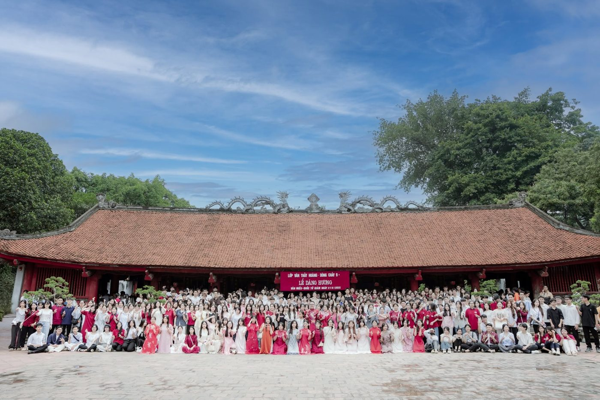<figcaption>Lễ dâng hương · 21/6/2025</figcaption></figure>
<figure class="pol a" style="--d: .8s; --t: -6deg; position: absolute; left: 0; bottom: 0; width: 46%"><span class="tape tl t-mint"></span><figcaption>Bó hoa của lớp</figcaption></figure>
<div class="deco a" style="--d: 1.1s; left: -1cqw; top: -1cqw; width: 10cqw">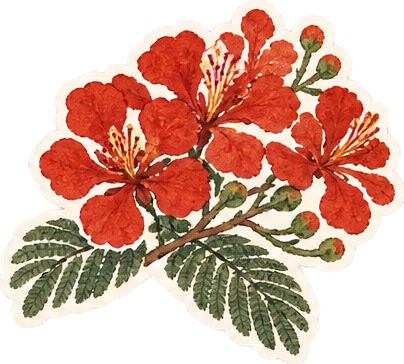</div>
<div class="deco a" style="--d: 1.2s; right: -1.6cqw; top: -4cqw; width: 6.8cqw; rotate: 10deg"></div>
<div class="deco a" style="--d: 1.35s; right: 6%; bottom: 2cqw; width: 8cqw; rotate: -10deg">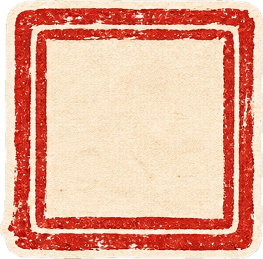<span style="position: absolute; inset: 0; display: flex; align-items: center; justify-content: center; font-family: 'Dancing Script', cursive; font-size: 3cqw; color: #C8361D; pointer-events: none">9+</span></div>
<div class="deco bob" style="left: 40%; top: 0; width: 2.4cqw"></div>
<div class="deco a hide-m" style="--d: 1.5s; left: 52%; bottom: 3cqw; width: 12cqw"></div>
</div>
</div>
</div>` : null}

${(s1) ? html`<div class="spread ${k1}">
<div class="pg pgL tex" style="background-color: #F6EDDA">
<p class="kicker a up" style="color: #C8361D">Lời mở đầu</p>
<h2 class="h2 a up" style="--d: .1s">Một năm học,<br />một dòng chảy</h2>
<p class="txt a up" style="--d: .25s">Hoàng Phủ Ngọc Tường từng hỏi: ai đã đặt tên cho dòng sông? Còn chúng con, sau một năm ngồi trong lớp Văn của thầy, muốn hỏi: ai đã đặt tên cho dòng chảy của chính mình?</p>
<p class="txt a up" style="--d: .35s">Năm 2024 – 2025, chúng con đến với thầy mang theo đủ nỗi lo của năm cuối cấp: sợ đề dài, sợ hết giờ, sợ cả cảm giác cầm bút mà không biết viết gì. Thầy không bắt chúng con thuộc văn mẫu. Thầy bắt chúng con đọc, nghĩ, rồi viết bằng chính giọng của mình.</p>
<p class="txt a up hand" style="--d: .4s; font-size: var(--k); color: #1F6F6B">Cuốn sổ này đi qua những tác phẩm chúng con đã học cùng thầy. Mỗi tác phẩm mở ra một kỷ niệm, vì với chúng con, văn chương và lớp học của thầy đã hoà thành một dòng chảy: Dòng chảy 9+.</p>
<div class="a fromL" style="--d: .6s; width: 48%; margin-top: 1.4cqw"></div>
<div class="deco a" style="--d: .8s; right: 3cqw; bottom: 4cqw; width: 8cqw; rotate: 10deg"></div>
<span class="pgno">1</span>
</div>
<div class="pg pgR tex" style="background-color: #F6EDDA">
<p class="kicker a up" style="color: #C8361D">Mục lục</p>
<ol style="list-style: none; margin: 1.6cqw 0 0; padding: 0; display: flex; flex-direction: column; gap: .5cqw">
${(toc || []).map((t, $index) => html`<li class="a fromR" style="--d: ${t.d}s">
<button type="button" onClick=${t.go} style="width: 100%; min-height: 44px; display: flex; align-items: baseline; gap: 1cqw; padding: .5cqw .4cqw; border: none; border-bottom: 1px dashed rgba(90,60,25,.35); background: transparent; font: inherit; color: inherit; cursor: pointer; text-align: left">
<span style="font-family: 'Fraunces', serif; font-weight: 600; font-size: var(--k); color: ${t.bg}; min-width: 2.6cqw">${t.label}</span>
<span style="flex: 1; font-family: 'Fraunces', serif; font-size: var(--k)">${t.name}</span>
<span class="hand" style="font-size: var(--cap); color: #7A5B2E">${t.work}</span>
</button>
</li>`)}
</ol>
<div class="deco a hide-m" style="--d: 1s; right: 2cqw; bottom: 2cqw; width: 9cqw"><span style="position: absolute; inset: 0; display: flex; align-items: center; justify-content: center; font-family: 'Dancing Script', cursive; font-size: 3cqw; color: #C8361D; pointer-events: none">9+</span></div>
<span class="pgno">2</span>
</div>
</div>` : null}

${(s2) ? html`<div class="spread ${k2}">
<div class="pg pgL dk" style="background-color: #3A1310; color: #F2E3C6">
<p class="kicker a up" style="color: #E3B556">Chương I · “Chữ người tử tù” — Nguyễn Tuân</p>
<div class="persp"><h2 class="h2 a stand" style="--d: .1s">Cảnh cho chữ</h2></div>
<p class="txt a up" style="--d: .25s; color: #E4D2B4">Trong “Chữ người tử tù”, Huấn Cao cho chữ viên quản ngục giữa nhà lao tối tăm: cái đẹp và thiên lương vẫn toả sáng ở nơi tưởng như không thể. Lớp của thầy cũng vậy. Giữa áp lực thi cử, giữa những buổi chữa đề đến khuya, thầy vẫn “cho chữ” chúng con: không phải chữ để đi thi, mà chữ để làm người. Ba con chữ thầy trao, chúng con chép lại trên ba tấm lụa bên cạnh.</p>
<div style="display: flex; gap: 2cqw; align-items: flex-start; margin-top: 2cqw" class="mstack">
<div class="a pop" style="--d: .65s; flex: 0 0 34%">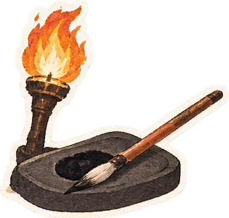</div>
</div>
<span class="pgno">3</span>
</div>
<div class="pg pgR dk" style="background-color: #3A1310; color: #F2E3C6; display: flex; flex-direction: column">
<div style="display: flex; gap: 2cqw; align-items: flex-start">
<p class="hand a up" style="--d: .2s; flex: 1; margin: 0; font-size: var(--k); color: #F2C063">Thầy rê chuột (hoặc chạm) vào từng tấm lụa để lật.</p>
<div class="a fromR" style="--d: .3s; flex: 0 0 34%"><figure class="pol" style="--t: 4deg"><span class="tape top t-red"></span>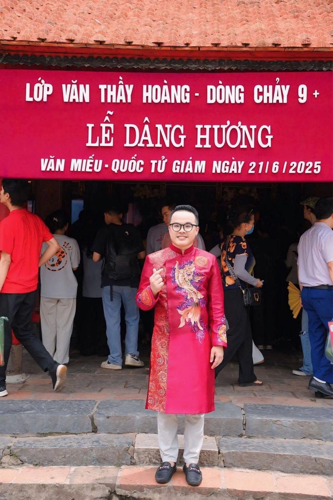<figcaption>Người cho chữ</figcaption></figure></div>
</div>
<div style="flex: 1; display: grid; grid-template-columns: repeat(3, minmax(0, 1fr)); gap: 1.4cqw; margin-top: 2cqw; min-height: 180px" class="mstack">
${(words || []).map((w, $index) => html`<div class="a pop" style="--d: ${w.d}s; min-height: 160px">
<button type="button" class="flip" aria-label=${w.label}>
<span class="inner">
<span class="face silk"><span style="font-family: 'Dancing Script', cursive; font-size: max(30px, 3.4cqw); line-height: 1; color: #C8361D">${w.word}</span></span>
<span class="face back" style="background: #C8361D; color: #FBE6BE; box-shadow: 0 0 40px rgba(240,140,40,.3)"><span style="font-family: 'Fraunces', serif; font-style: italic; font-size: max(16px, 1.6cqw); line-height: 1.3">${w.quote}</span></span>
</span>
</button>
</div>`)}
</div>
<span class="pgno">4</span>
</div>
</div>` : null}

${(s3) ? html`<div class="spread ${k3}">
<div class="pg pgL dk" style="background-color: #1B2747; color: #EFE3C8">
<p class="kicker a up" style="color: #F2C063">Chương II · “Hai đứa trẻ” — Thạch Lam</p>
<div class="persp"><h2 class="h2 a stand" style="--d: .1s">Ngọn đèn<br />những tối ôn thi</h2></div>
<p class="txt a up" style="--d: .25s; color: #DCD3C0">Liên và An thức đợi chuyến tàu đêm chỉ để nhìn thấy một chút ánh sáng từ thế giới khác. Những tối ôn thi, chúng con cũng thức: đợi hết ca học, đợi bài chữa, đợi một dòng nhận xét của thầy. Có hôm lớp online đông tới 228 người, mười giờ đêm màn hình vẫn sáng. Có hôm tan học, cả đám đi xe máy về qua phố vắng, đèn đường vàng như ngọn đèn chợ huyện. Thầy là ngọn đèn ấy: nhỏ thôi, nhưng đủ để chúng con không thấy mình lạc.</p>
<div class="a pop" style="--d: .45s; display: flex; align-items: center; gap: 2cqw; margin-top: 2cqw">
<div class="lamp" style="width: 8cqw; min-width: 70px; flex: none">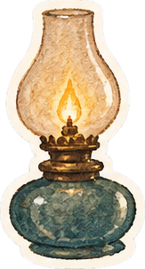</div>
<div class="sticky hand" style="--t: -3deg; font-size: var(--k); color: #3B2A12">“Từ trang giấy mỏng đến ánh đèn đêm…”</div>
</div>
<div class="deco a fromR hide-m" style="--d: .7s; left: 3cqw; right: 3cqw; bottom: 3cqw">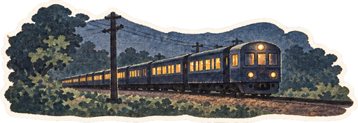</div>
<span class="pgno">5</span>
</div>
<div class="pg pgR dk" style="background-color: #1B2747; color: #EFE3C8">
<div style="display: grid; grid-template-columns: repeat(2, minmax(0, 1fr)); gap: 1.6cqw">
<div class="a fromR" style="--d: .2s"><figure class="pol" style="--t: 3deg"><span class="tape top t-sun"></span>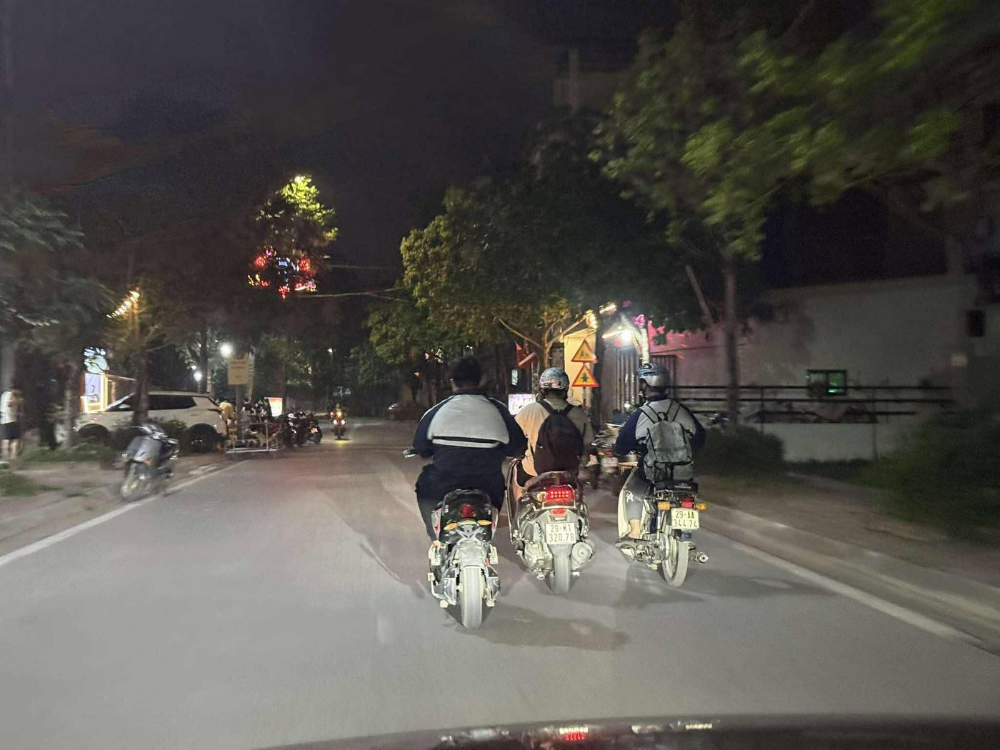<figcaption>Đường về sau giờ học</figcaption></figure></div>
<div class="a fromR" style="--d: .35s; margin-top: 3cqw"><figure class="pol" style="--t: -4deg"><span class="tape top t-ink"></span>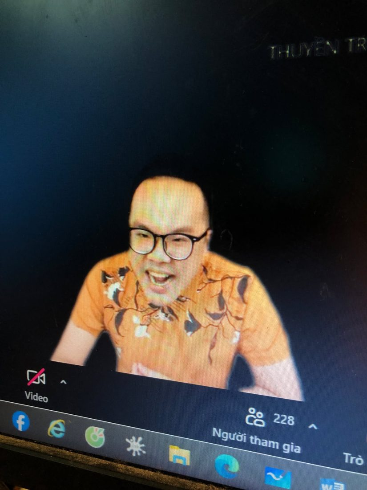<figcaption>228 người cùng thức</figcaption></figure></div>
<div class="a up" style="--d: .5s; grid-column: span 2"><figure class="pol" style="--t: -1deg"><span class="tape tl t-pink"></span><span class="tape tr t-mint"></span>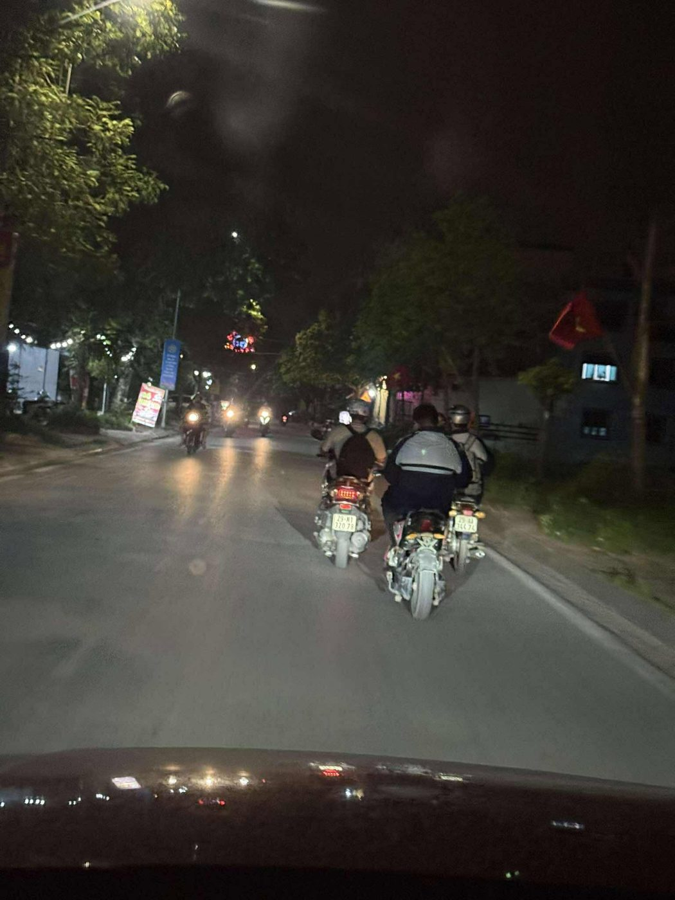<figcaption>Những ngọn đèn nhỏ trên phố</figcaption></figure></div>
</div>
<div class="deco a pop hide-m" style="--d: .8s; right: 1cqw; top: 1cqw; width: 12cqw">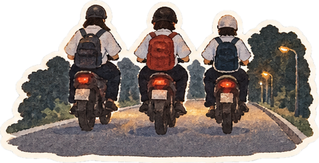</div>
<span class="pgno">6</span>
</div>
</div>` : null}

${(s4) ? html`<div class="spread ${k4}">
<div class="pg pgL tex" style="background-color: #DCEDE8">
<div style="display: flex; gap: 2cqw; align-items: flex-start" class="mstack">
<div style="flex: 1">
<p class="kicker a up" style="color: #1F6F6B">Chương III · “Sóng” — Xuân Quỳnh</p>
<div class="persp"><h2 class="h2 a stand" style="--d: .1s; color: #173B44">Dữ dội<br />và dịu êm</h2></div>
<p class="txt a up" style="--d: .25s">Xuân Quỳnh viết về con sóng “dữ dội và dịu êm, ồn ào và lặng lẽ”. Một năm ôn thi cũng thế: có những tuần đề khó dồn dập như sóng lớn, có những chiều lặng đi vì một bài văn chưa ưng. Nhưng như con sóng nào rồi cũng tìm ra tận bể, chúng con cứ thế đi qua bốn con sóng này, có thầy chèo cùng.</p>
</div>
</div>
<div style="display: grid; grid-template-columns: repeat(2, minmax(0, 1fr)); gap: 2cqw; margin-top: 2cqw">
${(wavesL || []).map((s, $index) => html`<div class="a ${s.anim}" style="--d: ${s.d}s"><figure class="pol" style="--t: ${s.t}deg"><span class="tape top ${s.tape}"></span><figcaption style="text-align: left"><b style="font-family: 'Fraunces', serif; color: #C8361D">${s.n} · ${s.title}</b><br />${s.text}</figcaption></figure></div>`)}
</div>
<span class="pgno">7</span>
</div>
<div class="pg pgR tex" style="background-color: #DCEDE8">
<div style="display: grid; grid-template-columns: repeat(2, minmax(0, 1fr)); gap: 2cqw; margin-top: 1cqw">
${(wavesR || []).map((s, $index) => html`<div class="a ${s.anim}" style="--d: ${s.d}s"><figure class="pol" style="--t: ${s.t}deg"><span class="tape top ${s.tape}"></span><figcaption style="text-align: left"><b style="font-family: 'Fraunces', serif; color: #C8361D">${s.n} · ${s.title}</b><br />${s.text}</figcaption></figure></div>`)}
</div>
<div class="a up hide-m" style="--d: .7s; position: absolute; left: 3cqw; right: 3cqw; bottom: 3cqw">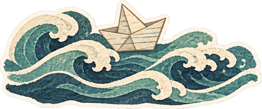</div>
<span class="pgno">8</span>
</div>
</div>` : null}

${(s5) ? html`<div class="spread ${k5}">
<div class="pg pgL tex" style="background-color: #E4E8D6">
<div class="persp"><div class="a stand" style="width: 100%; margin: -1cqw 0 0">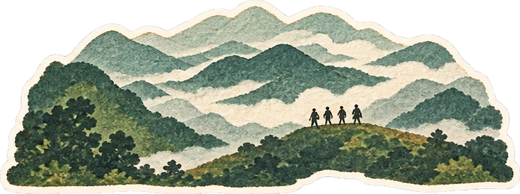</div></div>
<p class="kicker a up" style="--d: .2s; color: #2F5A43; margin-top: 1cqw">Chương IV · “Tây Tiến” — Quang Dũng</p>
<h2 class="h2 a up" style="--d: .3s; color: #1F3A2C">Đoàn quân áo dài về Văn Miếu</h2>
<p class="txt a up" style="--d: .45s">Quang Dũng nhớ về đoàn binh Tây Tiến đi qua núi cao sương dày mà vẫn hào hoa, lãng mạn. Ngày 21/6/2025, “đoàn quân” của thầy cũng lên đường: không phải ra chiến trường, mà về Văn Miếu – Quốc Tử Giám, khoác áo dài, dâng hương trước kỳ thi. Thầy đi giữa, áo đỏ rực như một vị thuyền trưởng. Hôm ấy chúng con hiểu: mình không đi thi một mình.</p>
<div style="display: grid; grid-template-columns: repeat(3, minmax(0, 1fr)); gap: 1.4cqw; margin-top: 2cqw">
</div>
<span class="pgno">9</span>
</div>
<div class="pg pgR tex" style="background-color: #E4E8D6">
<p class="hand a up" style="margin: 0; font-size: var(--k); color: #4E6B57">“Sương lấp đoàn quân mỏi” — còn chúng con thì chẳng mỏi chút nào.</p>
<div style="display: grid; grid-template-columns: repeat(3, minmax(0, 1fr)); gap: 2cqw 1.6cqw; margin-top: 2.4cqw">
${(photos || []).map((p, $index) => html`<div class="a ${p.anim}" style="--d: ${p.d}s"><figure class="pol" style="--t: ${p.t}deg"><span class="tape top ${p.tape}"></span><figcaption>${p.cap}</figcaption></figure></div>`)}
</div>
<div class="deco a pop hide-m" style="--d: 1.1s; right: 2cqw; bottom: 2cqw; width: 8cqw"></div>
<span class="pgno">10</span>
</div>
</div>` : null}

${(s6) ? html`<div class="spread ${k6}">
<div class="pg pgL dk" style="background-color: #2A1512; color: #F2E3C6">
<p class="kicker a up" style="color: #E3B556">Thước phim · Văn Miếu – Quốc Tử Giám</p>
<div class="persp"><h2 class="h2 a stand" style="--d: .1s">Ngày 21 tháng 6</h2></div>
<p class="txt a up" style="--d: .2s; color: #E4D2B4">Cả buổi sáng hôm ấy được ghi lại trong thước phim này: lễ dâng hương, những lời chúc, những nụ cười trước giờ vào trận. Thầy bấm vào để xem lại.</p>
<div class="a up" style="--d: .35s; margin-top: 1.6cqw; background: #000; box-shadow: 0 14px 30px rgba(0,0,0,.4)">
<video src="assets/video/video-van-mieu.mp4" poster="assets/img/video-van-mieu-poster.jpg" controls playsinline preload="metadata" onPlay=${videoPlay} style="display: block; width: 100%; aspect-ratio: 16 / 9; background: #000"></video>
</div>
<span class="pgno">11</span>
</div>
<div class="pg pgR dk" style="background-color: #2A1512; color: #F2E3C6">
<p class="kicker a up" style="color: #E3B556">Và những phút giây trong lớp</p>
<p class="txt a up" style="--d: .15s; color: #E4D2B4">Lớp học chật kín, hoa trên bàn, cây đàn trên tay. Mười ba giây thôi, nhưng là cả một năm.</p>
<div class="a fromR" style="--d: .3s; margin-top: 1.6cqw">
<figure class="pol" style="--t: 2deg"><span class="tape top t-sun"></span>
<video src="assets/video/video-lop-hoc.mp4" poster="assets/img/video-lop-hoc-poster.jpg" controls playsinline preload="metadata" onPlay=${videoPlay} style="display: block; width: 100%; aspect-ratio: 16 / 9; background: #000"></video>
<figcaption>Cả lớp quây quần bên thầy</figcaption></figure>
</div>
<span class="pgno">12</span>
</div>
</div>` : null}

${(s7) ? html`<div class="spread ${k7}">
<div class="pg pgL dk" style="background-color: #8E1F17; color: #F8E7C4">
<p class="kicker a up" style="color: #F2C063">Chương V · “Đàn ghi ta của Lorca” — Thanh Thảo</p>
<div class="persp"><h2 class="h2 a stand" style="--d: .1s">Lớp Văn thầy Hoàng</h2></div>
<p class="hand a up" style="--d: .2s; margin: .6cqw 0 0; font-size: var(--k); color: #F1CFB0">li-la li-la li-la… thành 9+ 9+ 9+</p>
<p class="txt a up" style="--d: .25s; color: #F8E7C4">Thanh Thảo viết về tiếng đàn của Lorca, tiếng đàn còn ngân mãi kể cả khi người nghệ sĩ đã đi xa. Lớp mình cũng có một tiếng đàn như thế: bài hát “Lớp Văn thầy Hoàng” chúng con viết tặng thầy, gói lại những điều thầy dạy, rằng văn chương là chiếc cầu, là nhân văn, là cách để hiểu nhau.</p>
<div style="display: flex; gap: 2cqw; align-items: center; margin-top: 1.6cqw">
<div class="a fromL" style="--d: .35s; flex: 0 0 34%">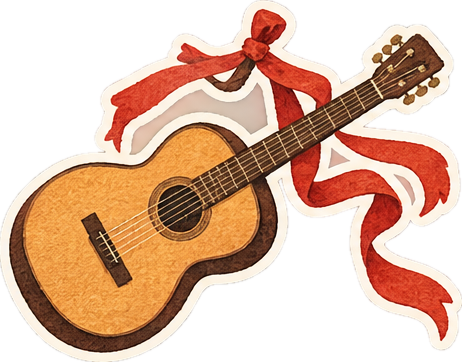</div>
<div class="a bob" style="flex: 0 0 9%"></div>
</div>
<div class="a up" style="--d: .65s; position: relative; width: 78%; margin: 2cqw auto 0; background: #F2E3C6; color: #2A231C; padding: 1.4cqw; box-shadow: 0 12px 24px rgba(0,0,0,.3); rotate: -2deg">
<div style="background: #2A231C; padding: 1cqw 2.4cqw; display: flex; justify-content: space-between; align-items: center">
<svg class="reel ${spinCls}" style="width: 3.6cqw; height: 3.6cqw" viewBox="0 0 64 64" aria-hidden="true"><circle cx="32" cy="32" r="28" fill="#F2E3C6"></circle><circle cx="32" cy="32" r="9" fill="#2A231C"></circle><path d="M32 6v14M32 44v14M6 32h14M44 32h14" stroke="#2A231C" stroke-width="5"></path></svg>
<span class="hand" style="color: #F2E3C6; font-size: var(--cap)">Giai điệu 9+ · Side A</span>
<svg class="reel ${spinCls}" style="width: 3.6cqw; height: 3.6cqw" viewBox="0 0 64 64" aria-hidden="true"><circle cx="32" cy="32" r="28" fill="#F2E3C6"></circle><circle cx="32" cy="32" r="9" fill="#2A231C"></circle><path d="M32 6v14M32 44v14M6 32h14M44 32h14" stroke="#2A231C" stroke-width="5"></path></svg>
</div>
<button type="button" onClick=${togglePlay} style="margin-top: 1cqw; width: 100%; min-height: 44px; border: none; background: #C8361D; color: #FBE6BE; font-family: 'Patrick Hand', cursive; font-size: var(--k); cursor: pointer">${playLabel}</button>
<span class="tape tl t-sun"></span><span class="tape tr t-pink"></span>
</div>
<span class="pgno">13</span>
</div>
<div class="pg pgR dk" style="background-color: #8E1F17; color: #2A231C">
<div style="display: grid; grid-template-columns: repeat(2, minmax(0, 1fr)); gap: 1.8cqw">
${(lyrics || []).map((l, $index) => html`<div class="a ${l.anim}" style="--d: ${l.d}s">
<div class="sticky" style="--t: ${l.t}deg; background-color: #FBF3DF; background-image: repeating-linear-gradient(180deg, transparent 0 calc(2.3cqw - 1px), #CFDDEE calc(2.3cqw - 1px) 2.3cqw)">
<p class="hand" style="margin: 0; font-size: var(--cap); color: #C8361D">${l.tag}</p>
<p style="margin: 0; white-space: pre-line; font-size: max(13px, 1.15cqw); line-height: 2.3cqw">${l.text}</p>
</div>
</div>`)}
</div>
<span class="pgno" style="color: #F8E7C4">14</span>
</div>
</div>` : null}

${(s8) ? html`<div class="spread ${k8}">
<div class="pg pgL dk" style="background-color: #3D403C; color: #EDE6D6; display: flex; flex-direction: column; align-items: center; text-align: center">
<div class="deco swing hide-m" style="left: 3cqw; top: 0; width: 6cqw">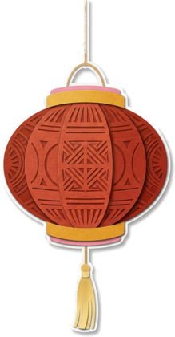</div>
<div class="deco swing hide-m" style="right: 3cqw; top: 0; width: 5.6cqw; animation-delay: -2s">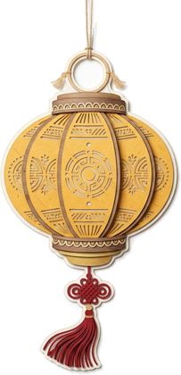</div>
<p class="kicker a up" style="color: #E3B556; margin-top: 2cqw">Chương VI · Bia Tiến sĩ</p>
<div class="persp"><h2 class="h2 a stand" style="--d: .1s">Bảng vàng<br />Dòng chảy 9+</h2></div>
<p class="txt a up" style="--d: .25s; color: #CFC6B2">Ở Văn Miếu, những tấm bia Tiến sĩ đứng trên lưng rùa đá, khắc tên người đỗ đạt để đời sau noi theo. Chúng con không có bia đá, nhưng có trang này. Mỗi con điểm bên cạnh là một năm thức khuya, một chồng đề luyện, và một lời hứa với thầy: “Con phải được 9+ Văn.” Kỳ thi tốt nghiệp THPT 2025, Khoá 2K7.</p>
<div class="persp" style="width: 40%; margin-top: auto"><div class="a stand" style="--d: .45s">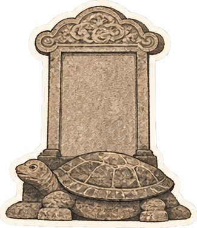</div></div>
<span class="pgno">15</span>
</div>
<div class="pg pgR dk" style="background-color: #3D403C; color: #2A2620">
<div class="persp" style="display: grid; grid-template-columns: repeat(4, minmax(0, 1fr)); gap: 1.6cqw 1.2cqw">
${(honors || []).map((h, $index) => html`<div class="a stand" style="--d: ${h.d}s; display: flex; flex-direction: column; align-items: center">
<div class="stele" style="width: 100%; padding: 1.8cqw .6cqw 1.2cqw; background: #BDB6A5; border-radius: 6cqw 6cqw 3px 3px; text-align: center; box-shadow: inset 0 0 0 3px #A49C8B">
<p style="margin: 0; font-size: max(9px, .8cqw); letter-spacing: .2em; color: #5A5245">ĐIỂM VĂN</p>
<p style="margin: .2cqw 0 .5cqw; font-family: 'Fraunces', serif; font-weight: 600; font-size: max(22px, 2.8cqw); line-height: 1; color: #8E1F17">${h.score}</p>
<p style="margin: 0; font-family: 'Fraunces', serif; font-weight: 600; font-size: max(12px, 1.15cqw); line-height: 1.15">${h.name}</p>
</div>
<div style="width: 76%; height: 1.4cqw; background: #6E6A5E; border-radius: 0 0 40px 40px"></div>
</div>`)}
</div>
<span class="pgno" style="color: #EDE6D6">16</span>
</div>
</div>` : null}

${(s9) ? html`<div class="spread ${k9}">
<div class="pg pgL tex" style="background-color: #F1DFB6">
<p class="kicker a up" style="color: #9A6A1E">Chương VII · những phong thư</p>
<div class="persp"><h2 class="h2 a stand" style="--d: .1s; color: #3B2A12">Thư gửi thầy</h2></div>
<p class="txt a up" style="--d: .2s">Có những điều nói trực tiếp thì ngại, nên chúng con viết. Tám phong thư là tám giọng khác nhau: đứa từng sợ Văn, đứa hay nộp bài muộn, đứa ngồi bàn đầu… nhưng cùng một lời cảm ơn.</p>
<div style="display: grid; grid-template-columns: repeat(2, minmax(0, 1fr)); gap: 2.4cqw; margin-top: 3cqw; padding: 0 1cqw">
<div class="a fromL" style="--d: .3s"><figure class="pol" style="--t: -3deg">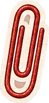<figcaption>“Hãy nói lời yêu thật nhiều…”</figcaption></figure></div>
<div class="a fromL" style="--d: .5s; margin-top: 3cqw"><figure class="pol" style="--t: 3deg">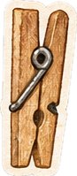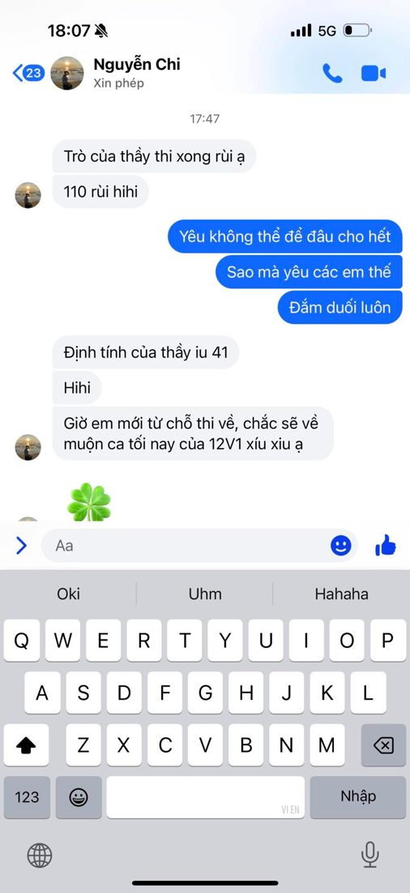<figcaption>“Trò của thầy thi xong rùi ạ”</figcaption></figure></div>
</div>
<div class="deco a pop hide-m" style="--d: .8s; right: 2cqw; top: 2cqw; width: 8cqw">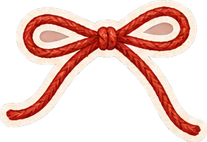</div>
<span class="pgno">17</span>
</div>
<div class="pg pgR tex" style="background-color: #F1DFB6">
<p class="hand a up" style="margin: 0; font-size: var(--k); color: #6B5229">Rê chuột để hé thư, bấm để đọc trọn.</p>
<div style="display: grid; grid-template-columns: repeat(3, minmax(0, 1fr)); gap: 2.4cqw 1.6cqw; margin-top: 2.6cqw">
${(letters || []).map((lt, $index) => html`<div class="a ${lt.anim}" style="--d: ${lt.d}s">
<button type="button" class="env" onClick=${lt.open} aria-label="Mở thư: ${lt.name}">
<span class="body"></span><span class="letter">Kính gửi thầy…</span><span class="pocket"></span><span class="flap"></span><span class="seal">9+</span><span class="who">${lt.name}</span>
</button>
</div>`)}
<div class="a pop" style="--d: 1.2s">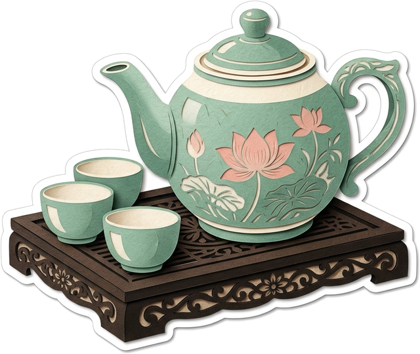</div>
</div>
<span class="pgno">18</span>
</div>
</div>` : null}

${(s10) ? html`<div class="spread ${k10}">
<div class="pg pgL tex" style="background-color: #F6C987">
<p class="kicker a up" style="color: #8E2414">Kết · “Tràng giang” — Huy Cận</p>
<div class="persp"><h2 class="h2 a stand" style="--d: .1s; color: #3A1A0E">Sông dài, trời rộng —<br />thuyền con đã ra khơi</h2></div>
<p class="txt a up" style="--d: .2s; color: #3A1A0E">Huy Cận nhìn con thuyền nhỏ trên dòng sông dài mà bâng khuâng. Giờ chúng con cũng là những con thuyền nhỏ đã rời bến lớp Văn, mỗi đứa một ngả: giảng đường, thành phố mới, những trang đời mới. Nhưng dòng chảy thầy khơi lên thì vẫn ở đó, và chúng con sẽ còn quay về.</p>
<div style="display: grid; grid-template-columns: repeat(2, minmax(0, 1fr)); gap: 2.4cqw; margin-top: 2.6cqw; align-items: start">
<div class="a fromL" style="--d: .35s"><figure class="pol" style="--t: -4deg"><span class="tape top t-tre"></span><figcaption>Cảm ơn thầy</figcaption></figure></div>
</div>
<span class="pgno">19</span>
</div>
<div class="pg pgR tex" style="background-color: #F6C987; display: flex; flex-direction: column; align-items: center; text-align: center">
<div class="a stamp" style="--d: .3s; width: 13cqw; height: 13cqw; min-width: 120px; min-height: 120px; margin-top: 1cqw; border-radius: 50%; background: #C8361D; color: #FBE6BE; display: flex; flex-direction: column; align-items: center; justify-content: center; box-shadow: 0 0 0 5px #F6C987, 0 0 0 8px #C8361D">
<span style="font-family: 'Fraunces', serif; font-weight: 600; font-size: max(48px, 6cqw); line-height: 1">10</span>
<span class="hand" style="font-size: var(--cap)">cho thầy</span>
</div>
<p class="txt a up" style="--d: .6s; max-width: 90%; color: #3A1A0E">Chúc thầy luôn mạnh khỏe, giữ mãi ngọn lửa với văn chương, và có thêm thật nhiều lớp “Dòng chảy” chảy mãi về phía tử tế.</p>
<p class="a up" style="--d: .8s; font-family: 'Dancing Script', cursive; font-size: max(28px, 3cqw); color: #8E2414; margin: 1cqw 0 0">Tập thể lớp 12V1</p>
<div class="a up" style="--d: 1s; width: 86%; margin-top: auto">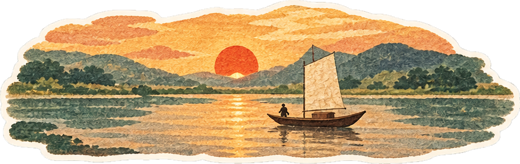</div>
<span class="pgno">20</span>
</div>
</div>` : null}

${(s11) ? html`<div class="spread ${k11}">
<div class="pg pgL tex" style="background-color: #F6EDDA">
<p class="kicker a up" style="color: #7A4A1E">Phụ lục</p>
<h2 class="h2 a up" style="--d: .1s; font-size: calc(var(--h2) * .75)">Những trang thầy không ngờ chúng con lưu lại</h2>
<div style="display: grid; grid-template-columns: repeat(2, minmax(0, 1fr)); gap: 2cqw 2.4cqw; margin-top: 2cqw; padding: 0 2cqw">
${(fun || []).map((f, $index) => html`<div class="a drop" style="--d: ${f.d}s"><figure class="pol" style="--t: ${f.t}deg"><span class="tape top ${f.tape}"></span><figcaption>${f.cap}</figcaption></figure></div>`)}
</div>
<span class="pgno">21</span>
</div>
<div class="pg pgR" style="background: #8E1F17; color: #FBE6BE; display: flex; flex-direction: column; align-items: center; justify-content: center; text-align: center; gap: 1.6cqw">
<div style="position: absolute; inset: 1.4cqw; border: 2px solid #E3B556; pointer-events: none"></div>
<div class="a pop" style="--d: .3s; width: 30%"></div>
<p class="a up" style="--d: .5s; margin: 0; font-family: 'Fraunces', serif; font-style: italic; font-size: max(22px, 2.6cqw)">Hết — nhưng dòng chảy thì còn mãi.</p>
<p class="a up hand" style="--d: .7s; margin: 0; font-size: var(--k); color: #F2C063">Lớp 12V1 · Dòng chảy 9+ · 20/11/2026</p>
<button type="button" class="navbtn a up" onClick=${restart} style="--d: .9s; background: #E3B556; color: #3B1410">Đọc lại từ đầu</button>
</div>
</div>` : null}

${(flipping) ? html`<div class="leaf ${leafCls}"><div class="lf ${leafFrontCls}" style="background-color: ${leafFront}"></div><div class="lb ${leafBackCls}" style="background-color: ${leafBack}"></div></div>` : null}

${(canPrevCorner) ? html`<button type="button" class="corner l" onClick=${prev} aria-label="Lật về trang trước"><span></span></button>` : null}
${(canNextCorner) ? html`<button type="button" class="corner r" onClick=${next} aria-label="Lật sang trang sau"><span></span></button>` : null}
</div>
</div>

<audio id="bgm" src="assets/audio/giai-dieu-9.mp3" loop preload="auto"></audio>
<button type="button" class="musicBtn" onClick=${togglePlay} aria-label=${musicAria}>
<svg class=${noteCls} width="20" height="20" viewBox="0 0 24 24" fill="none" stroke="currentColor" stroke-width="1.8" stroke-linecap="round" stroke-linejoin="round" aria-hidden="true"><path d="M9 18V5l12-2v13"></path><circle cx="6" cy="18" r="3"></circle><circle cx="18" cy="16" r="3"></circle></svg>
<span>${musicLabel}</span></button>
<nav style="display: flex; align-items: center; gap: 16px" aria-label="Lật trang">
<button type="button" class="navbtn" onClick=${prev} disabled=${atStart} aria-label="Trang trước">
<svg width="20" height="20" viewBox="0 0 24 24" fill="none" stroke="currentColor" stroke-width="2" stroke-linecap="round" aria-hidden="true"><path d="M19 12H5M11 6l-6 6 6 6"></path></svg></button>
<span class="hand" style="min-width: 220px; text-align: center; font-size: 20px; color: #3B2A12; background: rgba(255,247,230,.8); padding: 8px 18px; border-radius: 999px">${label}</span>
<button type="button" class="navbtn" onClick=${next} disabled=${atEnd} aria-label="Trang sau">
<svg width="20" height="20" viewBox="0 0 24 24" fill="none" stroke="currentColor" stroke-width="2" stroke-linecap="round" aria-hidden="true"><path d="M5 12h14M13 6l6 6-6 6"></path></svg></button>
</nav>

${(hasOpen) ? html`<div style="position: fixed; inset: 0; z-index: 80; background: rgba(42,15,11,.72); display: flex; align-items: center; justify-content: center; padding: 20px">
<article class="a up" style="--d: -.45s; position: relative; width: 100%; max-width: 620px; max-height: 85vh; overflow-y: auto; padding: 52px 40px 40px; background: #FFFDF6; background-image: repeating-linear-gradient(180deg, transparent 0 33px, #D6E2F0 33px 34px)">
<span class="tape top t-pink" style="width: 120px; height: 28px"></span>
<button type="button" onClick=${close} aria-label="Đóng thư" style="position: absolute; top: 10px; right: 10px; width: 44px; height: 44px; border: none; background: transparent; color: #3B2A12; cursor: pointer">
<svg width="20" height="20" viewBox="0 0 24 24" fill="none" stroke="currentColor" stroke-width="2" aria-hidden="true"><path d="M6 6l12 12M18 6L6 18"></path></svg></button>
<p style="font-family: 'Dancing Script', cursive; font-size: 32px; margin: 0 0 14px">Kính gửi thầy Hoàng,</p>
<p class="hand" style="margin: 0; font-size: 22px; line-height: 34px; white-space: pre-line">${openText}</p>
<p style="font-family: 'Dancing Script', cursive; font-size: 28px; text-align: right; margin: 24px 0 0; color: #C8361D">— ${openName}</p>
</article>
</div>` : null}
</main>`; } }
const comp = new Component({});
const root = document.getElementById('app');
let queued = false;
function draw() { queued = false; render(view(comp.renderVals()), root); }
function schedule() { if (!queued) { queued = true; requestAnimationFrame(draw); } }
draw();
if (comp.componentDidMount) comp.componentDidMount();
</script>
</body>
</html>
